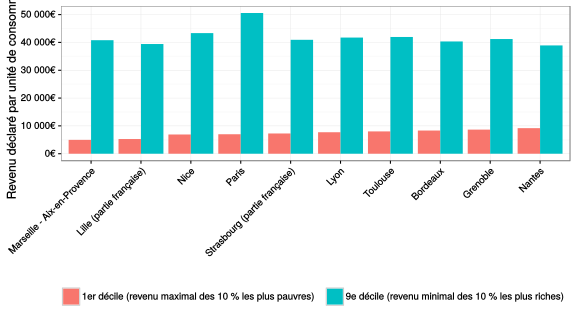

En 2012, les 10 % des ménages les plus pauvres de l’aire urbaine d’Aix-Marseille1 déclaraient un revenu (avant impôts et prestations sociales) inférieur à 4980 € par unité de consommation2, tandis que les 10 % les plus riches déclaraient un revenu d’au moins 40796 €. Cet écart donne une idée de l’ampleur des inégalités qui touchent ce territoire. L’INSEE soulignait d’ailleurs récemment qu’ “en matière de pauvreté, d’accès au logement et plus largement d’équilibre social, la situation de la métropole Aix-Marseille Provence est préoccupante”. Les inégalités y sont élevées, quelle que soit la manière dont on les mesure. La future métropole comptera même parmi les ensembles urbains de sa catégorie les plus inégalitaires, à égalité avec Lille (mais nettement derrière Paris, dont l’aire urbaine est très inégalitaire).
La notion d’inégalités est omniprésente dans le débat public et est centrale dans les conceptions politiques de la gauche. Pourtant, elle est souvent mal définie. Ou même, pas définie du tout, tant elle semble aller de soi. Ainsi, on cherchera en vain une définition explicite des inégalités, tant chez Piketty (que ce soit dans son Économie des inégalités ou dans son Capital au XXIe siècle) que, même, dans le… Dictionnaire des inégalités. La conséquence en est que la mesure du phénomène est également incertaine. De nombreux indicateurs existent, dont la valeur ne varie pourtant pas de la même manière. Pour le dire autrement, selon l’indicateur qu’on utilise, on ne mettra pas en avant le même aspect des inégalités. On ne sait donc pas vraiment ce qu’on mesure… Il y a aussi la question de savoir ce qui est inégalement réparti. Le plus aisé à mesurer, ce sont sans doute les inégalités de revenu, grâce à multiples services publics qui s’y consacrent, de l’administration fiscale à l’INSEE en passant par la CAF. Mais les inégalités sociales embrassent des domaines bien plus vastes, de l’éducation à la santé3 en passant par les chances d’être en couple.
Pour revenir au cas de la métropole aixo-marseillaise, les inégalités qui y règnent renvoient aux logiques de métropolisation de l’économie mondiale. La sociologue Saskia Sassen a ainsi montré comment la mondialisation et la financiarisation de l’économie induit la création de métropoles, au centre desquelles se concentrent les richesses. Ces métropoles sont ainsi le lieu d’inégalités majeures, liées à un mode de production qui voit coexister des travailleurs hautement qualifiés et très bien rémunérés, et des travailleurs (ou non-travailleurs) très peu qualifiés, souvent immigrés et disposant de très faibles revenus. La métropole marseillaise illustre à merveille ces contrastes : cinq arrondissements marseillais (les 1er, 2e, 3e, 14e et 15e) figurent parmi les plus quinze communes ou arrondissements les plus pauvres du pays. Mais la géographie des inégalités, dans la métropole d’Aix-Marseille, est toutefois spécifique : plus qu’à une logique centre-périphérie, qu’on observe par exemple en Île-de-France, on a affaire à une logique de multipolarité, avec deux centralités, à Aix et à Marseille.
Il faut aussi souligner que le principal moteur des inégalités, dans notre métropole, n’est pas seulement lié aux logiques économiques de la métropolisation. En effet, si on compare Aix-Marseille-Provence aux principales métropoles comparables (Paris, Lyon, Lille, Toulouse…), on constate que la part des revenus qui n’est pas liée à l’activité y est plus élevée qu’ailleurs. Il s’agit aussi bien du poids des retraités que de celui des prestations sociales (allocations chômage, RSA, minimum vieillesse, etc.). On ne peut donc se satisfaire ici de l’explication des inégalités qui prévaut en Île-de-France par exemple, celle d’une économie hautement compétitive où les inégalités sont “tirées” par le haut, par les revenus très élevés des travailleurs qualifiés et des détenteurs de capitaux. Chez nous c’est l’inverse : nos riches sont plutôt moins riches qu’ailleurs, mais nos pauvres sont (nettement) plus pauvres qu’ailleurs.
Bonus : cette application qui permet d’explorer, de 2001 à 2011, l’évolution et la géographie des inégalités de revenu au sein de la métropole.
Dont les contours sont proches de ceux de la future métropole Aix-Marseille-Provence. Malheureusement, pour l’heure, l’INSEE ne diffuse pas de données statistiques agrégées à l’échelle de la métropole.↩
L’unité de consommation (UC) est un mode de calcul des revenus permettant de les standardiser en fonction de la composition d’un ménage. Le premier adulte du ménage vaut une UC, les autres personnes de plus de 14 ans valent 0,5 UC, les enfants de moins de 14 ans 0,3 UC.↩
Voir à ce sujet l’excellent livre de l’épidémiologiste Richard Wilkinson, L’égalité c’est la santé.↩